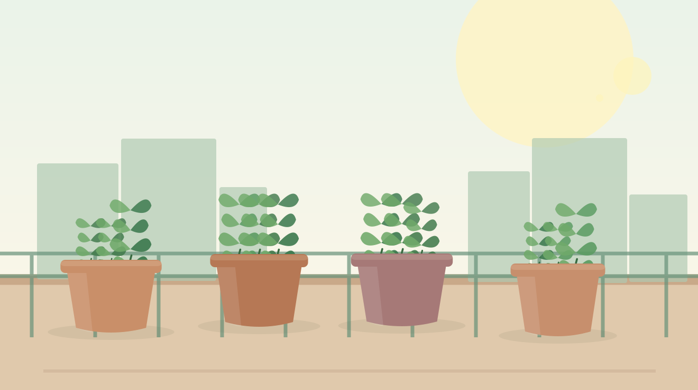

Fresh kitchen herbs
Basil, mint, and parsley add flavor without needing much room. Learn how to choose a pot, find a sunny spot, and harvest gently.
Grow something good
A beginner-friendly guide to growing herbs, vegetables, and flowers on a balcony, patio, or bright windowsill. Start with one pot and grow from there.

Pick your first project
Three simple ways to turn a little sunshine into something worth caring for. Choose the plants that fit your space and interests.
Basil, mint, and parsley add flavor without needing much room. Learn how to choose a pot, find a sunny spot, and harvest gently.

Grow a small harvest of cherry tomatoes, lettuce, or peppers. Compare sunlight needs, container sizes, and practical care tips.

Bring color to your railing or windowsill with container-friendly blooms. Discover flowers for sunny spots and options that welcome pollinators.
Good questions, simple answers
Starting a container garden is easier when you know the basics. Open any question to find a quick, practical answer.
Read the complete tips and tools guide